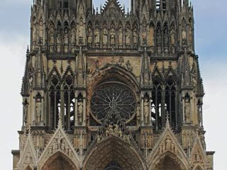
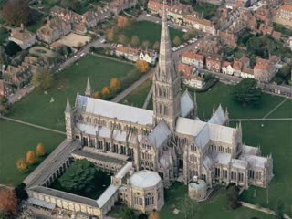
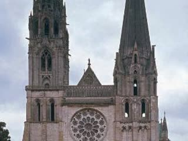

Notre-Dame Cathedral
Iconic riverside sanctuary with dramatic lighting effects.

Salisbury Cathedral
A luminous architectural masterpiece with legendary blue glass.

Chartres Cathedral
A luminous architectural masterpiece with legendary blue glass.
This page is inspired by the Gothic architectural style, and more specifically inspired by the stained glass piece from the start of the chapter in the textbook, on page 506.
The key insight I have learned by doing this project is that the most crucial part of the stained glass pieces featured in Gothic architecture is their actual physical properties.
In my experience of making this webpage, replicating the effect convincingly, even digitally, is quite difficult.
Therefore, the process of making this page gives me a new appreciation for the artform.
The above piece of clip art is in the public domain, all other images were either retrieved from the textbook or Wikipedia.